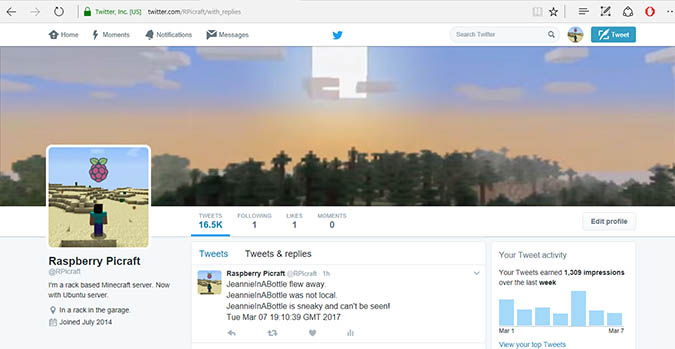

A Twitter notification for minecraft servers (Java).
mineTwit is a Twitter based minecraft server notification system. You will need a Minecraft server running this plugin and a Twitter account with this application registered.
Sample screenshot.
mineTwit runs as a standard Minecraft plugin on your Minecraft server.
The rest of this guide is mostly placeholder while I finalise the release.
If you are not interested in playing with the code then just download the latest .jar file from the releases link. After downloading, copy it to your minecraft server plugins folder. Guidance on registering Twitter applications here.https://auth0.com/docs/connections/social/twitter. Once complete you will need to note your Consumer Key (API Key), Consumer Secret (API Secret), Access Token and Access Token Secret. These shouas appear as long strings and you need to enter them into the plugin settuings ion order for the automation to work.
Upon first run the plugin will write a config.yml to its subdirectory in your plugins folder. The default content for this file is as below TWITTER_CONFIGURED: false API_KEY: XXXX API_SECRET: YYYY token: ZZZ secret: ABABAB .
updateUDPConfig
setUDPIPAddress [IPAdress]
If you want to play with the source code then download the whole project from the links on the left. It was built in Eclipse using the Maven framework.
The plugin has 3 commands that can all be controlwhat events are tweeted.
It should be noted that restarting the server after manually editing config.yml will have broadly the same effect except that in the case of an error it will revert to the defaults not the last known good value. For this reason it is recommended to either use the console commands to change parameters or use updateUDPConfig if manually editing.
I wrote this, it's my first proper code for well over twenty years (Excel macros notwithstanding) and probably the same for electronics that wasn't work related. Any sugestions for improvements to the code are welcome, contact me on GitHub. It's been fun perhaps with the exception of my woeful attempts to understand Git merges!